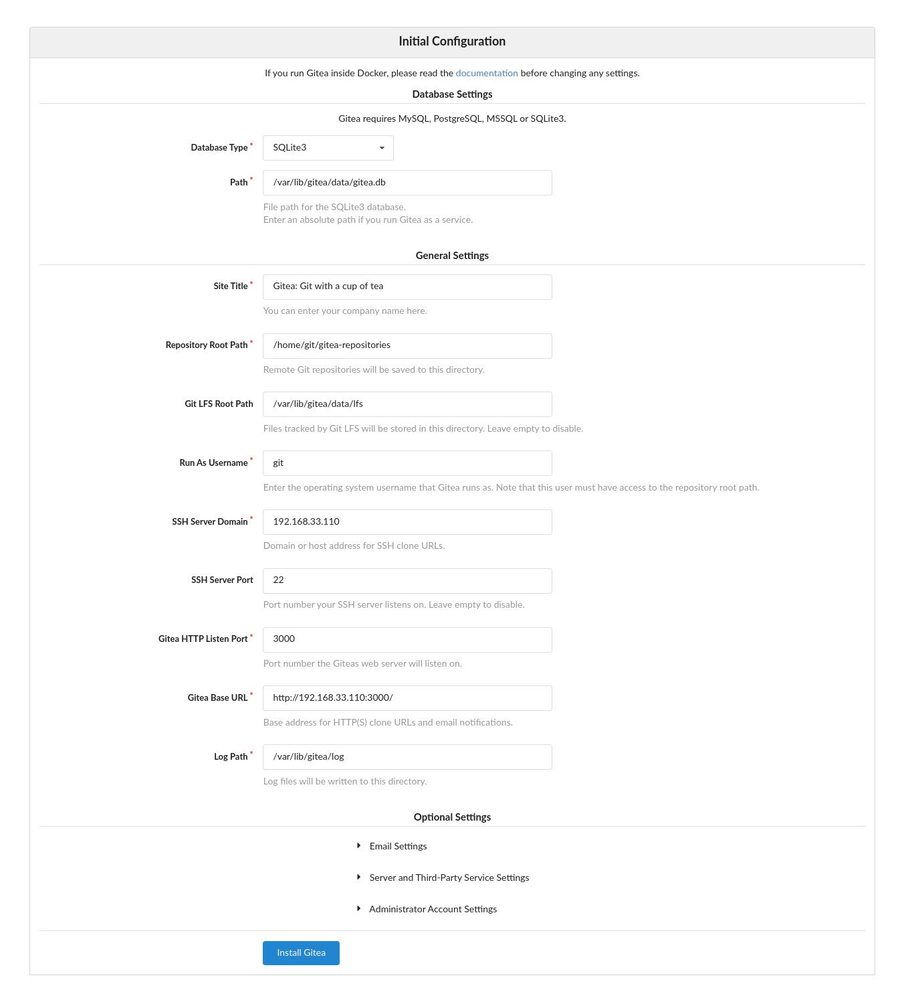

在 Ubuntu 18.04 上安装 Gitea
本教程说明了如何在 Ubuntu 18.04 上安装和配置 Gitea 。相同的说明适用于 Ubuntu 16.04 和任何其他基于 Debian 的发行版。
Gitea 是用 Go 语言编写的自托管开源 git 服务器。他 fork 自 Gogs.。 Gitea 包括存储库文件编辑器，项目问题跟踪，用户管理，通知，内置 Wiki 等。
Gitea 是轻量级应用程序，可以安装在低功率系统上。如果您正在寻找内存占用量少得多的 Gitlab 替代产品，并且不需要 Gitlab 提供的所有功能，那么您绝对应该尝试 Gitea 。
先决条件
Gitea 支持 SQLite ， PostgreSQL 和 MySQL / MariaDB 作为数据库后端。
我们将使用 SQLite 作为 Gitea 的数据库。如果您的 Ubuntu 系统上未安装 SQLite ，则可以通过以输入以下 sudo user 命令来安装它：
sudo apt update
安装 Gitea
Gitea 提供了 Docker 映像，也可以从源代码，二进制文件或作为软件包安装。
我们将从二进制文件安装 Gitea 。完成以下步骤，在 Ubuntu 上安装 Gitea 。
安装 Git
第一步是在服务器上安装 Git ：
sudo apt update
通过显示 Git 版本来验证安装：
git --version
git version 2.17.1
创建一个 Git 用户
将通过键入以下内容来创建一个新的系统用户，该用户将运行 Gitea 应用程序：
sudo adduser --system --group --disabled-password --shell /bin/bash --home /home/git --gecos 'Git Version Control' git
该命令将创建一个名为 git 的新用户和组，并将主目录设置为 /home/git 。输出将如下所示：
Adding system user `git' (UID 111) ...
Adding new group `git' (GID 116) ...
Adding new user `git' (UID 111) with group `git' ...
Creating home directory `/home/git' ...
下载 Gitea 二进制文件
访问 Gitea 下载页面，并下载适用于您的体系结构的最新二进制文件。在撰写本文时，最新版本为 1.10.2 。如果有可用的新版本，请在下面的命令中更改 VERSION 变量。
使用以下 wget 命令将 Gitea 二进制文件下载到 /tmp 目录中：
VERSION=1.10.2
sudo wget -O /tmp/gitea https://dl.gitea.io/gitea/${VERSION}/gitea-${VERSION}-linux-amd64
该 gitea 的执行文件可以从任何位置运行。我们将遵循约定并将二进制文件移至 /usr/local/bin 目录：
sudo mv /tmp/gitea /usr/local/bin
使二进制文件可执行：
sudo chmod +x /usr/local/bin/gitea
运行以下命令以创建目录并设置所需的权限和所有权：
sudo mkdir -p /var/lib/gitea/{custom,data,indexers,public,log}
上面的目录结构由官方的 Gitea 文档推荐。
设置 /etc/gitea 目录的权限为， 770 以便安装向导可以创建配置文件。安装完成后，我们将设置更多限制性权限。
创建系统单位文件
Gitea 提供了匹配好的的 Systemd 单位文件并且已与我们的设置匹配。
通过键入以下命令将文件 /etc/systemd/system/ 下载到目录 /etc/systemd/system/：
sudo wget https://raw.githubusercontent.com/go-gitea/gitea/master/contrib/systemd/gitea.service -P /etc/systemd/system/
完成后，启用并启动 Gitea 服务：
sudo systemctl daemon-reload
验证服务是否成功启动：
● gitea.service - Gitea (Git with a cup of tea)
Loaded: loaded (/etc/systemd/system/gitea.service; enabled; vendor preset: enabled)
Active: active (running) since Sat 2020-01-04 21:27:23 UTC; 3s ago
Main PID: 14804 (gitea)
Tasks: 9 (limit: 1152)
CGroup: /system.slice/gitea.service
└─14804 /usr/local/bin/gitea web --config /etc/gitea/app.ini
...
配置 Gitea
现在已经下载并运行了 Gitea ，是时候通过 Web 界面完成安装了。
默认情况下， Gitea 会侦听 3000 所有网络接口上端口上的连接。
如果您的服务器上运行着 UFW 防火墙，则需要打开 Gitea 端口：
要允许 3000 端口上的流量，请输入以下命令：
sudo ufw allow 3000/tcp
打开浏览器，输入 http://YOUR_DOMAIN_IR_IP:3000 ，然后会出现类似以下的屏幕：

数据库设置：
- 数据库类型： SQLite3
- 路径：使用绝对路径，
/var/lib/gitea/data/gitea.db
应用程序常规设置：
- 站点标题：输入您的组织名称。
- 存储库根路径：保留默认值
/home/git/gitea-repositories。 - Git LFS根路径：保留默认值
/var/lib/gitea/data/lfs。 - 以用户名运行： git
- SSH服务器域：输入您的域或服务器 IP 地址。
- SSH端口： 22 ，如果 SSH 正在侦听其他端口，请更改它 [](/linux/check-listening-ports-linux/)
- Gitea HTTP侦听端口： 3000
- Gitea基本 URL ：使用 http 和您的域或服务器 IP 地址。
- 日志路径：保留默认值
/var/lib/gitea/log
您可以随时通过编辑 Gitea 配置文件来更改设置。
完成后，点击“安装 Gitea” 按钮。安装是即时的。完成后，您将被重定向到登录页面。
点击“立即注册”链接。第一个注册用户将自动添加到 Admin 组。
使用以下命令将 Gitea 配置文件的权限更改为只读：
sudo chmod 750 /etc/gitea
现在，Gitea 已安装在您的 Ubuntu 计算机上。
为 Nginx 配置 SSL
此步骤是可选的，但强烈建议这样做。要将 Nginx 用作反向代理，您需要具有一个指向服务器公共 IP 的域或子域。在本教程中，我们将使用 git.example.com 。
首先，安装 Nginx 并使用以下指南生成免费的“Let's Encrypt SSL” 证书：
完成后，打开文本编辑器并编辑域服务器块文件：
sudo nano /etc/nginx/sites-enabled/git.example.com
server {
listen 80;
server_name git.example.com;
include snippets/letsencrypt.conf;
return 301 https://git.example.com$request_uri;
}
server {
listen 443 ssl http2;
server_name git.example.com;
proxy_read_timeout 720s;
proxy_connect_timeout 720s;
proxy_send_timeout 720s;
client_max_body_size 50m;
# Proxy headers
proxy_set_header X-Forwarded-Host $host;
proxy_set_header X-Forwarded-For $proxy_add_x_forwarded_for;
proxy_set_header X-Forwarded-Proto $scheme;
proxy_set_header X-Real-IP $remote_addr;
# SSL parameters
ssl_certificate /etc/letsencrypt/live/git.example.com/fullchain.pem;
ssl_certificate_key /etc/letsencrypt/live/git.example.com/privkey.pem;
ssl_trusted_certificate /etc/letsencrypt/live/git.example.com/chain.pem;
include snippets/letsencrypt.conf;
include snippets/ssl.conf;
# log files
access_log /var/log/nginx/git.example.com.access.log;
error_log /var/log/nginx/git.example.com.error.log;
# Handle/requests
location/{
proxy_redirect off;
proxy_pass http://127.0.0.1:3000;
}
}
不要忘记用您的 Gitea 域替换 git.example.com 并为 SSL 证书文件设置正确的路径。现在， HTTP 流量已经重定向到 HTTPS
重新启动 Nginx 服务以使更改生效：
sudo systemctl restart nginx
接下来，更改 Gitea 域和根 URL 。为此，请打开配置文件并编辑以下行：
sudo nano /etc/gitea/app.ini
文件 /etc/gitea/app.ini
[server]
DOMAIN = git.example.com
ROOT_URL = https://git.example.com/
通过键入以下命令重新启动 Gitea 服务：
sudo systemctl restart gitea
至此，已经配置了 Gitea 代理，您可以在以下位置访问它： https://git.example.com
配置电子邮件通知
为了使 Gitea 能够发送通知电子邮件，您可以安装 Postfix 或使用某些事务性邮件服务，例如 SendGrid ， MailChimp ， MailGun 或 SES 。
要启用电子邮件通知，请打开配置文件并编辑以下行：
sudo nano /etc/gitea/app.ini
文件 /etc/gitea/app.ini
[mailer]
ENABLED = true
HOST = SMTP_SERVER:SMTP_PORT
FROM = SENDER_EMAIL
USER = SMTP_USER
PASSWD = YOUR_SMTP_PASSWORD
确保您输入了正确的 SMTP 服务器信息。
重新启动 Gitea 服务以使更改生效：
sudo systemctl restart gitea
要验证设置并发送测试电子邮件，请登录 Gitea ，然后转到：站点管理>配置 > SMTP 邮件程序配置。
Gitea 还允许您通过创建 Web Webhook 连接到 Slack 并将通知发送到您的 Slack 频道。
升级 Gitea
要升级到最新的 Gitea 版本，只需下载并替换二进制文件即可。
-
停止 Gitea 服务：
sudo systemctl stop gitea -
下载最新的 Gitea 版本并将其移至
/home/git目录：VERSION=<THE_LATEST_GITEA_VERSION> -
使二进制文件可执行：
sudo chmod +x /usr/local/bin/gitea -
启动 Gitea 服务：
sudo systemctl restart gitea
结论
本教程将引导您完成在 Ubuntu 18.04 上安装 Gitea 的过程。
现在，您可以访问 Gitea 文档页面，并学习如何配置 Gitea 实例并创建第一个项目。